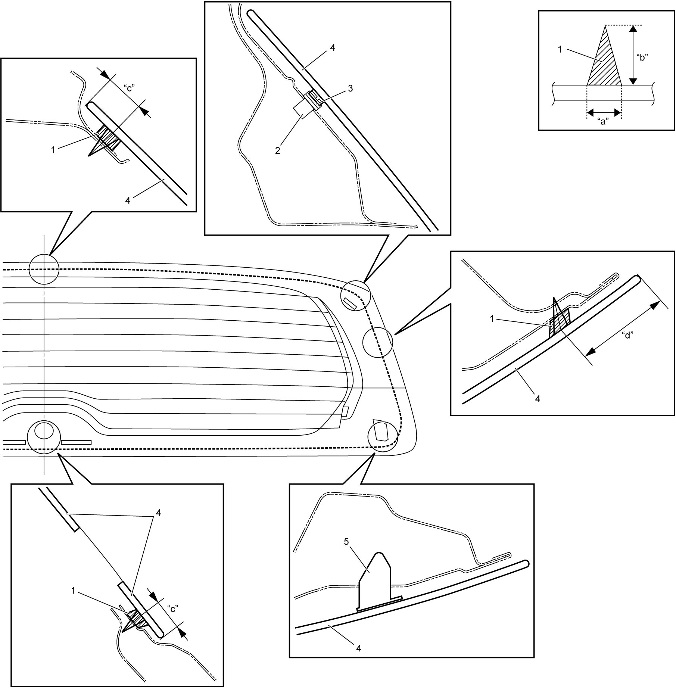

9E
| Rear End Door Window Glass Removal and Installation |
Preparation, removal and installation procedures are basically the same as Windshield Removal and Installation, however note the following points.
•Remove rear wiper motor before removing rear end door window glass. 
•Disconnect rear defogger connectors from rear end door window glass.
•Be careful not to damage connectors during removal and installation.
•Apply adhesive (1) as shown in figure.
•Locate glass fasteners (female) (2) so that they will fit with glass fastener (male) (3) when attaching glass.
•Disconnect rear defogger connectors from rear end door window glass.
•Be careful not to damage connectors during removal and installation.
•Apply adhesive (1) as shown in figure.
•Locate glass fasteners (female) (2) so that they will fit with glass fastener (male) (3) when attaching glass.
Adhesive amount and application area on rear end door window
Adhesive width “a”: Approx. 6.0 mm (0.24 in.)
Adhesive height “b”: Approx. 13.0 mm (0.51 in.)
Application position “c”: Approx. 15.0 mm (0.59 in.), “d”: Approx. 35.8 mm (1.40 in.)

 "Expand image")
| 4. | Rear end door window glass | 5. | Glass fastener clip |